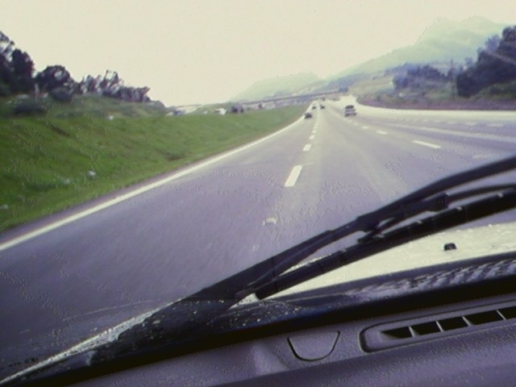

PLURAL MAPS / LAPS / GAPS
PLURAL AIMS / ALMOST /LOST IN SÃO PAULO
Morning "meals": studies books readings
Life Book. Book's life. Again.
Against life
The books. Ebooks.
"Voyage around my Room"?
Voyage around my books
Going out: blue morning. Half
the way. In Jundiaí
Working hard. Half of the day.
On the road.
Landscape from the driving
time: what a view!
My camera sees the road in São
Paulo: a lot of traffic
Is it a way of seeing? Going ahead.
What a turn of the camera! Wow!
Let's get a landscape anyway.
Get it!
What a turn on the right!
Nice view, calm street.
Street corner: what a
traffic! What a haunted house!
A very strange building! Many
ghosts inhabit that house!
My camera can't stop taking
snapshots!
"Nocturnal Expedition
around my Room":
I found a window! Night
Flying lights.
Stairs.
The end. At last at
home